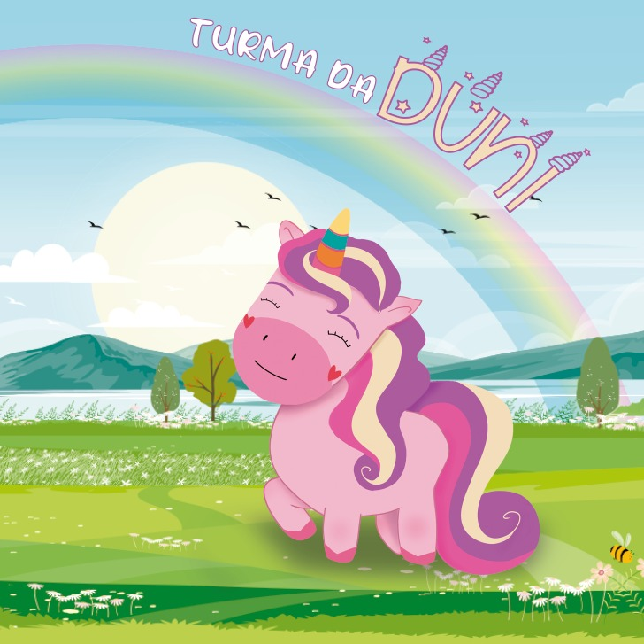

História
"Era uma vez, em uma pequena cidade, três pais de família que tinham um sonho em comum: criar um projeto musical que educasse e divertisse seus filhos. Movidos pela paixão pela música e o desejo de compartilhar valores positivos, eles decidiram formar a Turma da Duni.
Juntos, eles uniram suas habilidades e criatividade para desenvolver um universo mágico onde as crianças pudessem aprender de forma lúdica e se divertir ao mesmo tempo.
E assim, a história da Turma da Duni continua, encantando e educando crianças por meio da música e das animações. O projeto segue evoluindo, sempre trazendo novas aventuras e lições valiosas para os pequenos, ajudando-os a crescer de forma alegre, criativa e com valores sólidos."
